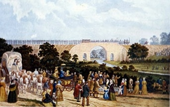

Una máquina de vapor arrastra seiscientos pasajeros: queda inaugurado el ferrocarril de Stockton a Darlington
La Locomotion número uno, conducida por su constructor George Stephenson, recorrió el nuevo camino de hierro entre multitudes atónitas, precedida por un jinete con bandera y alcanzando velocidades que ningún carruaje conoció. El caballo sirvió al hombre cinco mil años; hoy le presentaron al reemplazo.

Decenas de millares de curiosos, venidos de todo el norte de Inglaterra, se apostaron hoy a lo largo del nuevo camino de hierro para ver pasar el prodigio: una máquina de vapor llamada Locomotion, conducida por su constructor, el ingeniero George Stephenson, arrastrando sobre carriles una caravana de vagones carboneros atestados de pasajeros y un coche cerrado, el Experiment, reservado a los directores de la compañía. Delante trotaba un jinete con bandera abriendo el paso, hasta que en los tramos francos la máquina lo dejó atrás: se le midieron velocidades de quince millas por hora, que son veinticuatro kilómetros, y los jinetes que corrían a la par por los campos hubieron de rendirse.
La empresa nació del carbón, como casi todo en estos condados: las minas del interior necesitaban sacar su producto hasta el río Tees, y los canales proyectados pedían años y fortunas. Un comerciante cuáquero de Darlington, Edward Pease, apostó por el camino de hierro y por un ingeniero sin letras pero no sin genio: Stephenson, hijo de un fogonero de mina, que aprendió a leer ya crecido y llevaba años perfeccionando esas máquinas viajeras que casi todos tenían por juguete peligroso. El Parlamento autorizó primero una línea para vagones tirados por caballos; Pease y Stephenson lograron que se añadiera después, casi de contrabando, la palabra locomotoras.
El camino corre unas veintiséis millas entre las minas del interior y el puerto fluvial de Stockton, pasando por Darlington, con puentes de piedra y de hierro y carriles de hierro forjado. No todos le auguran bien: hay médicos que sostienen que el cuerpo humano no está hecho para semejantes velocidades, propietarios que juran que las chispas incendiarán sus campos y cocheros que ven en la máquina la ruina del oficio. Hoy hubo materia para todos: la caravana partió con demoras, un vagón descarriló dos veces y la máquina hubo de detenerse a reparar una avería, pero llegó, llegó llena, y llegó más rápido que todo lo conocido.
La compañía había previsto unos trescientos lugares; se subieron, contando los colgados de los costados y los encaramados al carbón, cerca de seiscientos, y nadie consintió en bajarse. En Stockton esperaban salvas de cañón, campanas al vuelo y una banda de música, y la jornada terminó en banquete con brindis por el rey y por el señor Pease. Los mineros viejos miraban la máquina con la familiaridad de quien la vio nacer; los campesinos, cuentan los papeles de la región, se santiguaban al verla pasar humeando, y más de un caballo, con buen instinto de gremio, se desbocó a su paso.
Los promotores hablan ya de tender caminos de hierro entre Liverpool y Manchester, y los ingenieros calculan que las velocidades de hoy son apenas el principio. Si no mienten, el mundo está por achicarse: las distancias no se medirán en jornadas sino en horas, el carbón y el trigo viajarán como cartas, y provincias que no se conocían serán vecinas. Quede para los años venideros juzgar todo lo que arrastra esta máquina además de sus vagones; este diario deja anotado que hoy, en un condado carbonero de Inglaterra, la humanidad cambió de paso.